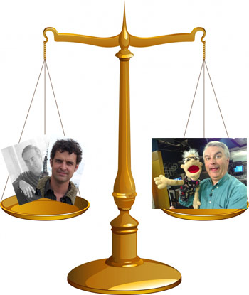

I added the popular Facebook application Compare People for shits and giggles. The basic premise, for those unfamiliar, is you compare two friends on random questions that range from “who is more tech-savvy” to “who would you rather sleep with.” Every now and then Compare People will send out an e-mail showing random facts from your social graph.
One such e-mail (copied below) proved that A-List-Internet-Web-Celebs are way better at everything than you will ever be.
This email was sent by Compare People. You can disable emails here.
—
Highest ranked in each category
* “Who is funnier”
1. Jeff Macpherson
2. Leo Laporte
3. Jason McCabe Calacanis
* “Who is more creative”
1. Leo Laporte
2. Jeff Macpherson
3. Jason McCabe Calacanis
* “Who would I rather be trapped on a desert island with”
1. Leo Laporte
2. Jeff Macpherson
3. Danielle Cohen
* “Who is more famous”
1. Leo Laporte
2. Jeff Macpherson
3. Jason McCabe Calacanis
* “Who is more popular”
1. Leo Laporte
2. Jeff Macpherson
3. Jason McCabe Calacanis
Thanks for crushing my inner-geekdom self confidence Compare People.
Who are these people?
Leo Laporte – Is the founder and Chief TWiT at twit.tv where he runs many podcasts including This Week In Tech.
Jeff Macpherson – Otherwise known as Dr. Tiki, is part of the trio behind TikiBarTV, a comedy show based on cocktails.
Jason McCabe Calacanis – Founder of Weblogs Inc. and now Mahalo, the human powered search engine.


")
")